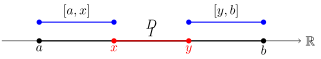
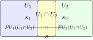

Intervals as a Categorical Structure
The Interval Between Intervals: A Mathematical Reflection
Our interval tree operations can be viewed through the lens of lattice theory and order theory. The intervals form a partially ordered set (poset) with respect to the containment relation, but our operations are more interesting than simple containment.
Let’s consider what’s happening algebraically:
Interval Splitting Operation
For an interval \(I = [a,b]\) and a deletion region \(D = [x,y]\), our splitting operation is effectively:\[ \text{split}(I, D) = \begin{cases} \{ [a, x], [y, b] \} & \text{if } a < x < y < b \\ \{ [a, x] \} & \text{if } a < x < b \leq y \\ \{ [y, b] \} & \text{if } x \leq a < y < b \\ \emptyset & \text{if } x \leq a \leq b \leq y \\ \{ [a, b] \} & \text{if } y \leq a \text{ or } b \leq x \end{cases} \]
This accounts for all possible relative positions of \(a, x, y, b\). Essentially, we remove the overlap \(I \cap D\) from \(I\) to preserve maximal non-overlapping segments. This operation forms a meet-semilattice where the meet operation \(\wedge\) is the intersection of intervals.
Visualization
Interval Merging During Insertion
When inserting \(I = [a,b]\), we perform:\[ \text{merge}(I_1,\ldots,I_n,I) = [\min(a_1,\ldots,a_n,a), \max(b_1,\ldots,b_n,b)] \]
where \(I_1,\ldots,I_n\) are overlapping intervals. This forms a join-semilattice where the join operation $ $ creates the smallest interval containing all operands.
Visualization of Interval Merging:
The key mathematical insight is that our operations form a complemented distributive lattice on the space of disjoint interval sets. The complement operation corresponds to our splitting operation, while the join is our merging operation.
This algebraic structure ensures that:
- Our operations are well-defined and closed.
- The disjoint property is preserved as an invariant.
- The operations are associative and commutative.
This is why our seemingly complex tree operations reduce to clean algebraic manipulations on intervals.
Meet Semilattice Structure
The meet operation on intervals has useful algebraic properties. For any two intervals \(I_1 = [a_1,b_1]\) and \(I_2 = [a_2,b_2]\), their meet is:
\[ I_1 \wedge I_2 = \begin{cases} [\max(a_1,a_2), \min(b_1,b_2)] & \text{if } \max(a_1,a_2) \leq \min(b_1,b_2) \\ \emptyset & \text{otherwise} \end{cases} \]
This operation satisfies the semilattice axioms:
- Idempotency: \(I \wedge I = I\)
- Commutativity: \(I_1 \wedge I_2 = I_2 \wedge I_1\)
- Associativity: \((I_1 \wedge I_2) \wedge I_3 = I_1 \wedge (I_2 \wedge I_3)\)
The empty interval \(\emptyset\) acts as a bottom element: \(I \wedge \emptyset = \emptyset\) for all intervals \(I\).
Lattice Diagram of Meet Operation:
This diagram represents the lattice structure where \(I_1\) and \(I_2\) converge to their meet \(I_1 \wedge I_2\), and \(\emptyset\) is the bottom element.
In our interval tree, this structure manifests when we split intervals during deletion. The splitting operation can be viewed as computing the meet of an interval with the complement of the deletion region, followed by considering connected components:
\[ \text{split}(I,D) = \text{components}\left( I \wedge \overline{D} \right) \]
This algebraic view explains why our splitting operation preserves the maximum possible portions of the original intervals while maintaining disjointness.
Complemented Distributive Lattice Structure
Our interval operations form a complemented distributive lattice \((L, \vee, \wedge, \overline{()}, \emptyset, \mathbb{R})\) where:
Join Operation (\(\vee\)): For overlapping intervals, creates their union:
\[ I_1 \vee I_2 = [\min(a_1,a_2), \max(b_1,b_2)] \]
Meet Operation ( \(\wedge\) ): Creates their intersection:
\[ I_1 \wedge I_2 = [\max(a_1,a_2), \min(b_1,b_2)] \]
Complement ( \(\overline{()}\) ): For an interval \(I = [a,b]\):
\[ \overline{I} = (-\infty,a) \cup (b,\infty) \]
The lattice satisfies these key properties:
Distributivity: For all intervals ( I_1, I_2, I_3 ):
\[ I_1 \wedge (I_2 \vee I_3) = (I_1 \wedge I_2) \vee (I_1 \wedge I_3) \] \[ I_1 \vee (I_2 \wedge I_3) = (I_1 \vee I_2) \wedge (I_1 \vee I_3) \]
Complement Laws: For any interval ( I ):
\[ I \vee \overline{I} = \mathbb{R} \] \[ I \wedge \overline{I} = \emptyset \]
Bounds: \(\emptyset\) is the bottom element and \(\mathbb{R}\) is the top element:
\[ \emptyset \leq I \leq \mathbb{R} \quad \text{for all intervals } I \]
Hasse Diagram of Lattice Structure:
This structure explains why our interval operations are well-behaved:
- The distributive property ensures our splitting and merging operations are consistent.
- The complement operation gives us a natural way to handle deletion.
- The lattice bounds provide natural edge cases for our algorithms.
In our implementation, we restrict ourselves to finite intervals for practicality, but the algebraic structure remains the same. The tree operations preserve these lattice properties while providing efficient access to the intervals.
Categorical Structure
Our interval operations can be elegantly expressed in category theory, revealing deeper connections to other mathematical structures.
The Category of Intervals
To illustrate the categorical structure, consider the following diagram of intervals and inclusion morphisms:
In this diagram:
- \(f: I_1 \to I_2\) is a morphism when \(I_1 \subseteq I_2\).
- \(I_1 \wedge I_2\) is the intersection of \(I_1\) and \(I_2\), with inclusion morphisms \(g\) and \(h\).
Let’s define Intv, the category of intervals where:
- Objects are intervals \([a,b]\) where \(a,b \in \mathbb{R} \cup \{\pm\infty\}\).
- Morphisms \(f: I_1 \to I_2\) are inclusion maps where \(I_1 \subseteq I_2\).
- Identity morphisms are the natural inclusions \(\text{id}_I: I \to I\).
- Composition is the usual composition of inclusions.
This category has interesting properties:
- Initial Object: \(\emptyset\) (empty interval).
- Terminal Object: \(\mathbb{R}\) (full real line).
- Products: The meet operation \(\wedge\) gives categorical products.
- Coproducts: The join operation \(\vee\) gives categorical coproducts.
Functor to Sets
There’s a natural functor \(F: \text{Intv} \to \text{Set}\) where:
\[ F([a,b]) = \{ x \in \mathbb{R} \mid a \leq x \leq b \} \]
This functor preserves the lattice structure and shows how our interval operations relate to set operations.
To visualize the functor \(F: \text{Intv} \to \text{Set}\), consider mapping intervals to their corresponding subsets on the real line:
Monoidal Structure
Our interval operations form a symmetric monoidal category with:
- Tensor Product: \(I_1 \otimes I_2 = I_1 \wedge I_2\) (intersection).
- Unit Object: \(\mathbb{R}\) (full real line).
The coherence conditions are satisfied by the natural associativity and commutativity of interval intersection.
Galois Connection
The splitting and merging operations form a Galois connection between the lattice of intervals and the lattice of sets of intervals. Specifically, the splitting operation \(\text{split}: L \to P(L)\) and the merging operation \(\text{merge}: P(L) \to L\) are adjoint functors satisfying:
\[ \text{split}(I) \subseteq S \quad \text{if and only if} \quad I \subseteq \text{merge}(S) \]
for an interval \(I\) and a set of intervals \(S\). This adjunction reflects the duality between partitioning an interval into non-overlapping pieces and combining overlapping intervals into a single interval.
Sheaf Structure
The collection of intervals forms a sheaf on \(\mathbb{R}\) where:
- Sections over an open set \(U\) are the intervals contained in \(U\).
- Restriction Maps are the natural inclusions.
- Gluing corresponds to our merge operation.
The sheaf properties ensure our local operations (on individual intervals) coherently extend to global operations (on sets of intervals).
This categorical perspective reveals that our interval tree isn’t just a data structure—it’s implementing fundamental mathematical structures that appear across mathematics. The categorical properties ensure our operations are “natural” in a precise mathematical sense.
The sheaf structure can be visualized with open sets and sections:
In this diagram:
- \(s_1\) and \(s_2\) are sections over \(U_1\) and \(U_2\).
- The restriction maps \(\rho\) connect these sections to their agreement on the overlap \(U_1 \cap U_2\).
- The gluing axiom allows us to form a global section \(s\) over \(U_1 \cup U_2\).
Sheaf Structure and Its Connection to Logic and Toposes
The collection of intervals naturally forms a sheaf over the real line \(\mathbb{R}\). In topology and algebraic geometry, a sheaf formalizes the idea of data that varies continuously over a space, capturing both local and global properties.
Sheaf Definition in This Context:
- Open Covering: Consider an open cover \(\{U_i\}\) of \(\mathbb{R}\).
- Sections: Over each open set \(U_i\), the sections are the intervals entirely contained within \(U_i\).
- Restriction Maps: For open sets \(V \subseteq U\), the restriction map \(\rho_{UV}\) takes an interval in \(U\) to itself viewed in \(V\) (since intervals are subsets of \(\mathbb{R}\)).
- Gluing Axiom: If we have sections over each \(U_i\) that agree on overlaps \(U_i \cap U_j\), they can be uniquely glued together to form a global section over \(\bigcup U_i\).
Connection to Logic and Toposes:
A topos can be thought of as a generalized space that behaves like the category of sets but has a rich internal logic. In particular, toposes provide a framework where we can perform logical reasoning in a geometric context.
Our sheaf of intervals over \(\mathbb{R}\) can be seen as a local home for logical assertions about intervals. The intervals represent predicates about positions on the real line (e.g., “the value lies between \(a\) and \(b\)”). The operations on intervals correspond to logical connectives:
- Intersection ( \(\wedge\) ): Logical conjunction (“and”).
- Union ( \(\vee\) ): Logical disjunction (“or”).
- Complement ( \(\neg\) ): Logical negation.
In the language of topos theory:
- Subobject Classifier: Intervals can be seen as subobjects of \(\mathbb{R}\), and the structure of intervals aligns with the subobject classifier in a topos.
- Internal Logic: The interval operations form a Heyting algebra, particularly when considering open intervals and the intuitionistic logic inherent in topos theory. This aligns with the internal logic of a topos, which does not presume the law of excluded middle.
- Grothendieck Topology: The open sets of \(\mathbb{R}\) form a basis for a Grothendieck topology, over which our sheaf of intervals is defined.
Implications for Our Interval Tree:
- Local to Global Principle: The interval tree manages local intervals (sections) efficiently while the sheaf structure ensures these local pieces fit together into a coherent global structure.
- Logical Reasoning: Operations on the interval tree correspond to logical deductions. For instance, querying the tree for overlaps is akin to evaluating logical predicates.
- Topos-Theoretic Interpretation: The interval tree embodies a topos-theoretic structure where computations on intervals reflect computations in the internal logic of the topos.
Why This Matters:
Understanding the sheaf and topos structure provides deeper insights:
- Modularity: Sheaf properties ensure we can modify intervals locally without unintended global side effects.
- Consistency: The logical framework guarantees that our operations are consistent and free from contradictions.
- Extensibility: The categorical perspective allows us to generalize interval trees to more complex spaces and data types, benefiting from the rich theory of toposes.
In essence, the interval tree isn’t just a practical data structure—it’s a concrete manifestation of abstract mathematical concepts from topology, logic, and category theory. This duality enriches our understanding and opens doors to advanced applications in computer science and mathematics.
Alternative Representations of Interval Structures
While interval trees are a powerful and efficient way to represent intervals and their algebraic structures, they are just one of many possible representations. The mathematical properties we’ve discussed can be embodied in various data structures, each with its own advantages.
Other efficient representations include:
Segment Trees
A segment tree is a binary tree where each node represents an interval. Segment trees are particularly useful for storing information about intervals and querying which intervals contain a given point. They support efficient range queries and updates.Interval Skip Lists
An interval skip list is a probabilistic data structure that combines the features of skip lists and interval trees. It’s efficient for interval searches and can be simpler to implement compared to balanced trees.Range Trees
Range trees are multi-level binary search trees optimized for range searching problems. They are useful for higher-dimensional interval queries and can handle orthogonal range searches efficiently.R-Trees
Commonly used in spatial databases, R-trees index multi-dimensional information such as geographical coordinates. They are ideal for indexing intervals in multiple dimensions and support efficient querying.Binary Indexed Trees (Fenwick Trees)
While primarily used for cumulative frequency tables, they can be adapted for certain interval problems, especially when dealing with prefix sums or ranges.Segment Interval Trees
A hybrid of segment trees and interval trees, designed to efficiently handle both interval overlaps and range queries.
Each of these structures leverages the underlying algebraic and categorical concepts of intervals we’ve explored. In upcoming sections, we’ll delve into these alternative representations, examining how they model the same mathematical foundations while offering different performance characteristics and use cases.
References
Advanced Data Structures by Peter Brass (Cambridge University Press, 2008)
This book provides an in-depth exploration of data structures, including interval trees.Introduction to Lattices and Order by B.A. Davey and H.A. Priestley (Cambridge University Press, 2002)
This book provides a comprehensive introduction to lattices and order structures, including the algebraic and categorical properties of lattices.Sheaves in Geometry and Logic: A First Introduction to Topos Theory by Saunders Mac Lane and Ieke Moerdijk (Springer-Verlag, 1992)
This book provides a detailed introduction to topos theory, including the categorical structure of sheaves and its connection to logic.Categories for the Working Mathematician by Saunders Mac Lane (Springer-Verlag, 1998)
This book provides a comprehensive introduction to category theory, including applications to algebra, geometry, and logic.Stone Spaces by Peter T. Johnstone (Cambridge University Press, 1982)
This book explores topology and logic through the lens of Stone spaces and Heyting algebras, which relate closely to the internal logic of toposes.Galois Connections and Applications by K. Denecke and S.L. Wismath (Springer-Verlag, 2009)
Offers insight into Galois connections, shedding light on the adjoint relationships in splitting and merging operations within interval structures.
Handbook of Discrete and Computational Geometry edited by Jacob E. Goodman, Joseph O’Rourke, and Csaba D. Tóth (Chapman and Hall/CRC, 2017)
Contains comprehensive chapters on interval trees, range searching, and the underlying mathematical foundations, bridging computational geometry and data structures.